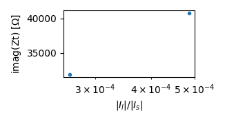

Note
Click here to download the full example code
Analyzing leakage currents
Reproduce Fig. 4 of Zimmermann et al 2019:
Zimmermann, E., Huisman, J. A., Mester, A., and van Waasen, S.: Correction of phase errors due to leakage currents in wideband EIT field measurements on soil and sediments, Measurement Science and Technology, 30, 084 002, doi:10.1088/1361-6501/ab1b09, 2019.
Out:
selecting multiplexer group 1
selecting multiplexer group 1
constructing four-point measurements
import matplotlib.pylab as plt
import numpy as np
import reda
import reda.importers.eit_fzj as eit_fzj
emd, md = eit_fzj.get_mnu0_data(
'data_eit_fzj_leakage_currents/eit_data_mnu0.mat',
'data_eit_fzj_leakage_currents/configs.data',
multiplexer_group=1
)
data_1k = emd.query('frequency == 1000')
# symmetric excitation current
Is = data_1k['Iab']
# leakage current
Il = data_1k['Ileakage']
ratio_IlIs = np.abs(Il) / np.abs(Is)
Zt_imag = np.imag(data_1k['Zt'])
fig, ax = plt.subplots(1, 1, figsize=(8.3 / 2.54, 4.5 / 2.54))
ax.semilogx(ratio_IlIs, Zt_imag, '.')
ax.set_ylabel(r'imag(Zt) [$\Omega$]')
ax.set_xlabel(r'$|I_l| / |I_s|$')
fig.tight_layout()
with reda.CreateEnterDirectory('output_eit_fzj_leakage_currents'):
fig.savefig('plot_ratio_vs_Zt.jpg', dpi=300)